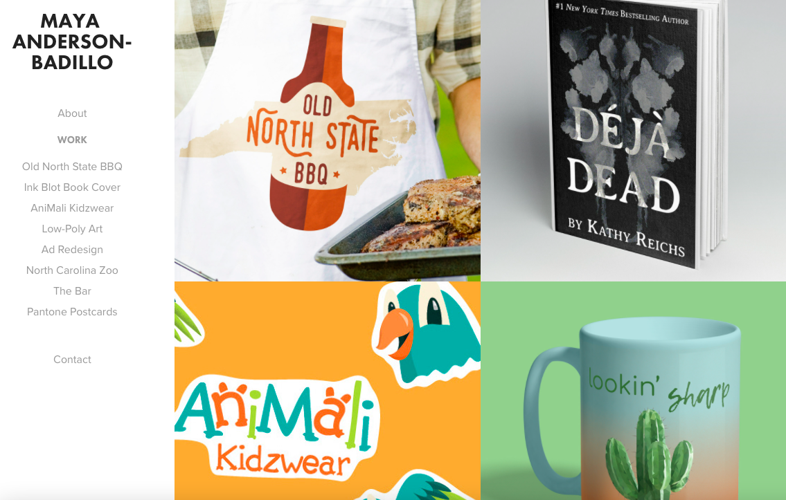

Maya Anderson-Badillo
Graphic Design Student
Hello! My name is Maya Anderson-Badillo and I am an Advertising and Graphic Design student at Wake Tech Community College. I love studying layouts and typography. Upon graduation, I hope to work for a small design company or as an in-house designer.
Portfolio
To view my portfolio, please visit mandersonbadillo.myportfolio.com.
Work Experience
Server
HG SPLY CO Trophy Club
February 2021 - Present
- Create an exceptional guest experience with attentive, above-and-beyond service
- Develop extensive knowledge of food allergies and dietary restrictions
- Utilize teamwork and multitasking skills to serve up to 40 guests at a time
Merchandise and Service Coordinator
Ulta Beauty
August 2018 - February 2021
- Implemented new processes to reduce hours spent on shipment
- Manage customer service issues in a positive, professional manner
- Led task team to operational success with a hands-on leadership approach
Education
Wake Technical Community College - Raleigh, NC
Advertising and Graphic Design A.A.S. (2022)
Dean's List, President's List, William Gaston Allen Scholarship
Design Basics Certificate, Graphic Design Certificate